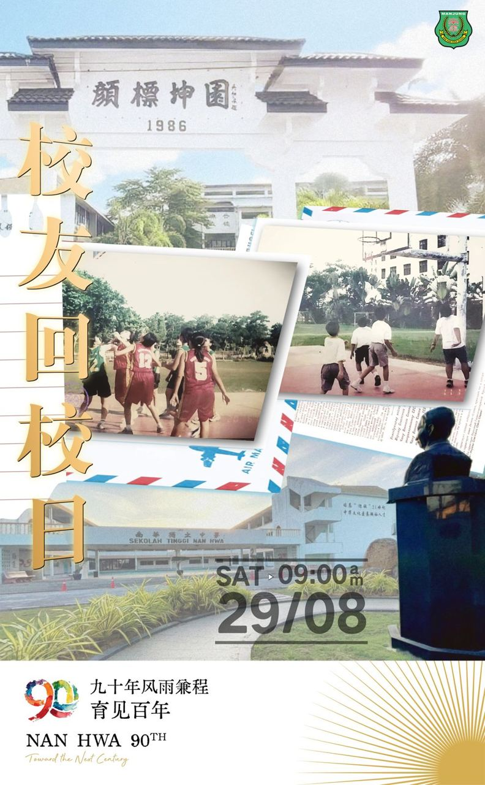
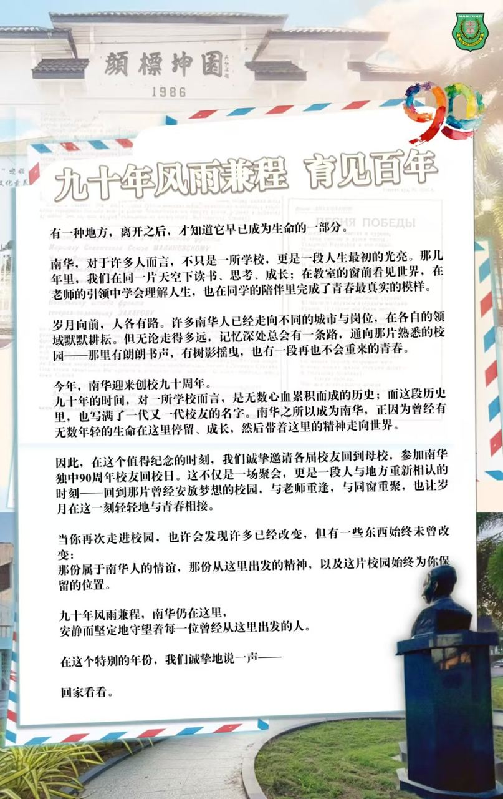
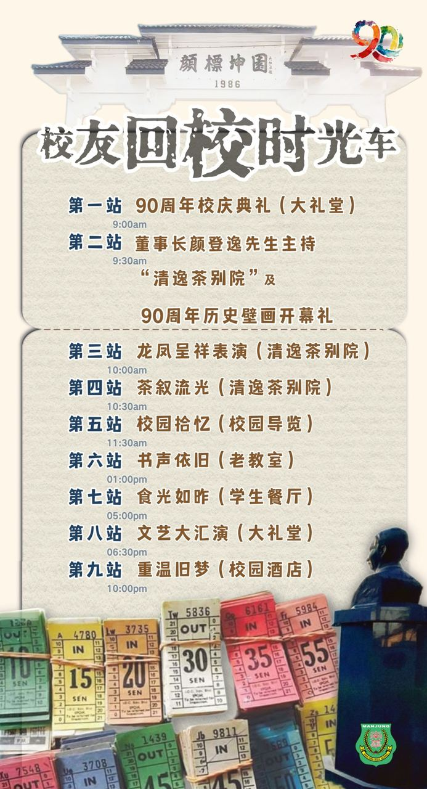

九十年风雨兼程 ，南华始终在这里，邀历届校友，搭乘这一趟：
九十年风雨兼程 ，南华始终在这里，邀历届校友，搭乘这一趟：
“校友回校时光车”
让您随着这班车的出发，回到书声依旧的母校，拾忆校园昨日流光。
校友们，在这里与老师重逢、与同窗重聚、重新搭一趟承载着记忆与恩情，一路直达南华独中与您共织的育见百年大业。
校友们！回家看看吧！
日期：8月29日(星期六)
时间：9.00am
地点：母校南华独中
时光车票（含茶点+午晚餐+文艺大汇演嘉宾券）咨询专线：+6011-6464 6267


